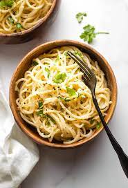

Creamy Garlic Pasta

Description
As far as creamy pasta recipes, this is the best I have ever had.
Add prawns and/or scallops to make an amazing seafood Alfredo.
Ingredients
- 2 teaspoons olive oil
- 4 garlic cloves, minced
- 2 tablespoons butter
- 3 cups chicken broth, or more as needed
- ½ teaspoon ground black pepper
- ¼ teaspoon salt
- ½ pound spaghetti
- 1 cup grated Parmesan cheese
- ¾ cup heavy cream
- 1 ½ tablespoons dried parsley
Steps
- Heat olive oil in a medium pan over medium heat. Add garlic and stir until fragrant, 1 to 2 minutes. Add
butter and stir constantly until melted. Pour in 3 cups chicken broth; add pepper and salt. Bring to a boil.
Add spaghetti and cook, stirring occasionally, until tender yet firm to the bite, about 12 minutes. Add more
chicken broth if pasta starts to stick to the pan.
- Add Parmesan cheese, cream, and parsley and mix until thoroughly combined. Serve immediately.